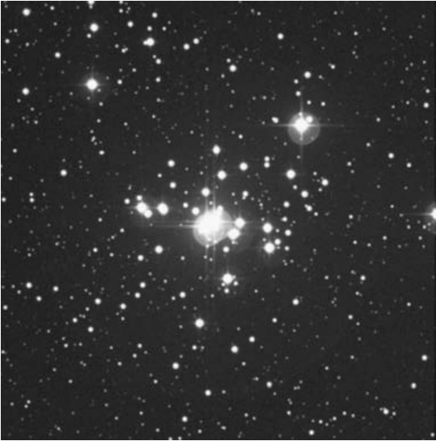

肯布尔瀑布星链 · Kemble's Cascade (NGC 1502)
The Jolly Roger NGC 1502 Type: Open Cluster Con: Camelopardalis
快乐罗杰星团 NGC 1502 类型：疏散星团 星座：鹿豹座
Whenever we venture into the night, our eyes unconsciously try to distinguish familiar shapes and forms in the nocturnal landscape. It's a primitive response that stems from the days when our distant ancestors needed to know friend from foe.
每当我们步入夜色，双眼总不自觉地在夜幕中搜寻熟悉的轮廓与形态。这种原始本能可追溯至远古先民需辨别敌友的生存年代。
Unlike the animals that threatened attack, though, the stars remained fixed to the firmament. They moved together as one, like some distant migrating herd. The longer humans gazed into the peering eyes of night, the more comfortable and understanding they became with the stars. Fear waned.
与那些威胁攻击的动物不同，群星始终固定在苍穹之上。它们如迁徙的远牧般同步移动。人类凝视夜之眼眸愈久，对星辰便愈发熟稔与理解。恐惧逐渐消退。
"Soon the brightest stars became familiar. Some were used in navigation. Others were organized into recognizable patterns – ones that reflected the simplicity of the times."
"不久，最明亮的星辰便为人们所熟知。其中一些被用于导航，另一些则被编排成可辨识的图案——这些图案映射着那个时代的质朴。"
基本参数 · Essential Data
| 参数 Parameter | 值 Value |
|---|---|
| 赤经 Right Ascension | $04^{\mathrm{h}}07.8^{\mathrm{m}}$ |
| 赤纬 Declination | $+62^{\circ}20^{\prime}$ |
| 星等 Magnitude | 6.0（奥米拉）; 5.7 |
| 视直径 Apparent Diameter | $20^{\prime}$ |
| 距离 Distance | 2,650 光年 light-years |
| 类型 Type | 疏散星团 Open Cluster |
| 星座 Constellation | 鹿豹座 Camelopardalis |
| 发现者 Discoverer | 威廉·赫歇尔 William Herschel, 1787 |
发现之旅 · Discovery
w. h e r s c h e l : [Observed November 3, 1787] A cluster of stars, pretty rich and considerably compressed, a little elongated, 3′ or 4′ diameter, irregularly faint. (H VII-47)
赫歇尔：[1787年11月3日观测] 一个相当密集且压缩程度较高的星团，略呈拉长状，直径约3′至4′，亮度不规则偏暗。（H VII-47）
"The late Franciscan and amateur astronomer Lucien J. Kemble (1922–1999) discovered the asterism in 1980 with a pair of 7×35 binoculars. At the time, he was sweeping the skies above his home in Saskatchewan (Alberta, Canada), when he noticed 'a beautiful cascade of faint stars tumbling from the northeast down to the open cluster NGC 1502.'"
"已故的方济会修士兼业余天文学家卢西恩·J·肯布尔（1922-1999）于1980年使用一副7×35双筒望远镜发现了这个星群。当时他正在加拿大阿尔伯塔省萨斯喀彻温的住所上空巡天，突然注意到'一串美丽的暗星从东北方向倾泻而下，坠入疏散星团NGC 1502'。"
肯布尔立即向《天空与望远镜》专栏作家沃尔特·斯科特·休斯顿寄去了发现信，后者随即在1980年12月的《深空奇观》专栏中推广了这个发现。为纪念发现者，休斯顿后来建议将该星群命名为"肯布尔瀑布"。
Kemble immediately wrote a letter of discovery to Sky & Telescope columnist Walter Scott Houston, who, in turn, popularized the find in his December 1980 Deep-Sky Wonders column. To honor the discoverer, Houston later suggested the asterism be called Kemble's Cascade.
"He was 'shocked' when he first saw it in binoculars because, he said, 'there was a totally unexpected gem . . . a celestial waterfall of dozens of 9th- and 10th-magnitude stars. Down it went 2½° before splashing into NGC 1502.'"
"他首次通过双筒镜观测时'震惊不已'，因为'那里存在着完全出乎意料的珍宝...数十颗9至10等星组成的银河瀑布，绵延2½°后倾泻入NGC 1502'。"

如此美景为何长久未被察觉？原因有三。首先，鹿豹座是夜空中最黯淡的星座之一——尽管其边界覆盖了757平方度的广阔天区，但该星座内没有一颗亮于四等的恒星。其次，肉眼可见的苍白天区（特别是靠近天极的区域）似乎对业余天文爱好者缺乏吸引力。第三点或许最为关键：这个星瀑中仅有3颗恒星足够明亮，得以被收录在当时最流行的《诺顿星图》中。
How did such a beautiful sight go unnoticed for so long? There are several reasons. First, Camelopardalis is one of the most obscure constellations in the night sky; while its borders cover a significant 757 square degrees of sky, Camelopardalis has no stars brighter than fourth magnitude. Second, for some reason, pallid regions of the naked-eye sky, especially those near the celestial poles, seem unattractive to backyard astronomers. And third, and perhaps most important, only three stars in the Cascade are bright enough to have been included in the most popular atlas of the day: Norton's Star Atlas.
尽管许多资料声称肯布尔瀑布星链拥有20颗"成员星"，但这具有高度主观性。在休斯顿原始文章中刊登的肯布尔手绘稿里，可辨识的恒星数量是这个数字的两倍。实际观测结果取决于所用望远镜口径和设定的星等极限。
While many sources say that Kemble's Cascade has 20 "members," that is highly subjective. In Kemble's original drawing, which appears in Houston's original article, twice that many stars can be counted. What you see depends on what aperture you use and what magnitude limit you impose.
观测指南 · Observing Guide
要寻找肯布尔瀑布星链，首先定位5等星α。它与4.5等的仙后座ι星及4等的英仙座η星构成一个近乎等边的三角形东顶点。将拳头伸直（约10°）可覆盖该三角形区域。即便肉眼无法直接观测到α星，只需在脑海中勾勒这个等边三角形，并用双筒望远镜扫视该区域。绝不会认错这颗5等星——因为肯布尔瀑布星链正从西北向东南流过其侧畔。
To find Kemble's Cascade, first locate 5th-magnitude Star α. It forms the eastern apex of a near-equilateral triangle with 4.5-magnitude Iota Cassiopeiae and 4th-magnitude Eta Persei. Your fist held at arm's length (10°) will fill the triangle. Even if you cannot see Star α with your naked eyes, just imagine the equilateral triangle in your mind and sweep your binoculars across its location. There will be no mistaking the correct 5th-magnitude star, because Kemble's Cascade flows right by it – from the northwest to the southeast.
在黑暗天空下用双筒望远镜扫视，至少能看到20颗恒星构成这条星链——这些是该星群最显著的成员。其中最亮星达到5.0等，可作为观测时的指引星标。
At
🔒 受限于篇幅，本文仅展示部分样章。O'Meara 先生完整的观测手记、实测数据及未公开的独家配图，请参阅原著双语典藏版。
👉 立即在闲鱼获取《DEEP-SKY COMPANIONS》中英双语高清典藏版